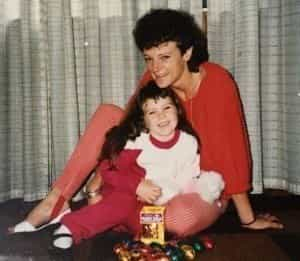

< < < Back
Terrible Mother Who Took Her Kids To Syria Now Wants To Leave Islamic State – Return Of Kings
“They want to come home,” she said. “My daughter made the mistake of a lifetime. Today she is a parent alone in a foreign and vicious land looking after a widowed 14-year-old and four other young children.”
– Karen Nettleton, the mother of Tara Nettleton, quoted in The Sydney Morning Herald
Tara Nettleton is an Australian currently living in the self-proclaimed Islamic State. Last year, she took her five children, via Malaysia, to Syria. Her husband, the now possibly dead Khaled Sharrouf, was already there as an Islamic State fighter.
Sharrouf became infamous for beheading Syrian soldiers, even getting one of his sons, a mere 7-year-old, to hold up a severed head on social media for all the world to see. Recent reports claim that the avowed jihadist survived a drone attack.
Nettleton’s family members, her Sydney-based mother Karen in particular, have been seeking media outlets of late, desperately calling for the Australian government to allow Tara and the children to return. Australian Prime Minister Tony Abbott, sensibly, is insisting that Tara Nettleton will be charged (and almost certainly convicted) for both supporting terrorism and taking part in an illegal foreign conflict.
Wanting to avoid this, the family has engaged the services of a prominent Sydney barrister and is resorting to treating Tara as if she were a victim.
This is the life Tara Nettleton has knowingly and passionately brought her children to.
This self-pitying narrative is based on nothing but a pack of lies. Tara Nettleton’s husband had been convicted and jailed years ago for plotting terrorist attacks intended to kill scores in Australia. To argue that she made a “mistake” in taking herself and the five children to Syria after her husband had shown strong desires to kill people in Australia is nothing but a pathetic insult to any half-conscious human being aware of the news cycle.
Importantly, Nettleton was aware of the deplorable situation already existing in Syria, where the forces of Bashar al-Assad and often secular rebels had been engaged in bloody battles for three years.
Sadly, defending Tara Nettleton’s shocking and purely criminal abuse of her vulnerable children represents yet another attempt to invoke femininity and motherhood so a woman avoids any responsibility for her actions. This is a theme I have already explored in the case of mothers killing their children, notably after the breakdown of a marriage.
Truly heinous acts towards children, including exposing them to the risk of death and inevitable psychological horror within a mass-murdering terrorist caliphate, are still perceived by many in society as only the domain of fathers, not mothers.
How is Tara’s use and endangerment of her children not child abuse?
Tara Nettleton loved posting about her glorious life with fellow jihadi wives. Then it got hard and her gender became a most useful tool to try and stoke sympathy.
Thanks to a conscious, flagrantly premeditated and ideological decision, Tara Nettleton’s children are irrevocably scarred. The sons of hers involved in the handling of severed human heads will be adversely impacted until their final breaths, if they are lucky enough to live beyond their childhoods.
More than aware of the brand of Islam she and her husband were following, Nettleton would have additionally realized that her daughters would be married off to much older men while still minors. In the case of one, a 14-year-old, she was betrothed to her husband’s best friend, who was killed in the same attack that may or may not have killed Sharrouf.
Only the smallest glimpses of the children’s lives have been captured on social media, so we have no way of knowing what other innumerable mental and psychiatric tortures they have been exposed to.
And this is where Tara Nettleton’s mother Karen and the rest of her family enter the picture. Of course, Ms. Nettleton wants the safe return of her daughter and five grandchildren. But she veers into pure nonsense when she equates the children’s plight with Tara’s:
I don’t want my daughter and grandchildren to be collateral damage in this shameful and tragic war.
If Tara Nettleton dies, she is not “collateral damage.” She has been an active supporter of Islamic State. Her belief in this self-proclaimed caliphate was so strong that she abandoned the comparatively secure anchoring of her children in Australia and took them to a land plagued by civil war, where even the privileged children of Syrian government elites and other functionaries have died in the resulting carnage.
It is also poignant to remember that we would not engage in any such discourse about adult victimhood if a father had taken his children to a bloodied land like Syria to purposefully live in a terrorist state.
The constant, unequivocal denial of female agency
You know you’ve done horrendous things when your mother has to post your childhood pictures in the media to gain sympathy.
Thankfully, the desperate PR campaign of Tara’s family is failing to cast her in a better light. No major, remotely reputable public figures have come out in support of her, nor should they. Although one would hope that the children are removed to safety, Tara’s choices have ensured that this will probably not be the case.
So what can we glean from this situation?
Firstly, the compulsive drive to defend the indefensible when it comes to selfish and criminal female behavior is yet to die. Like Karla Faye Tucker, the opportunist murderer executed in Texas, gender is used and abused to try and spare women from either culpability or the fate they bring upon themselves. What is troubling is that families and other supporters know that this strategy, however far removed from reality it is, usually has a good chance of succeeding.
Secondly, it is possible to make out some rough contours of where this defense is rejected by modern society. As a grouping, we must define and utilize these boundaries more effectively. And then we must redraw them according to what should be their proper limits.
Whether it’s the perennially excused female sexual abuse of teenage minors and other underage children, female-perpetrated homicide, or mothers taking their kids to a terrorist hotspot and then supporting terrorism within it, the pussy passes afforded to blatantly criminal women must end.
Read More: Understanding The Ideology Behind The Islamic State


{kind=link}